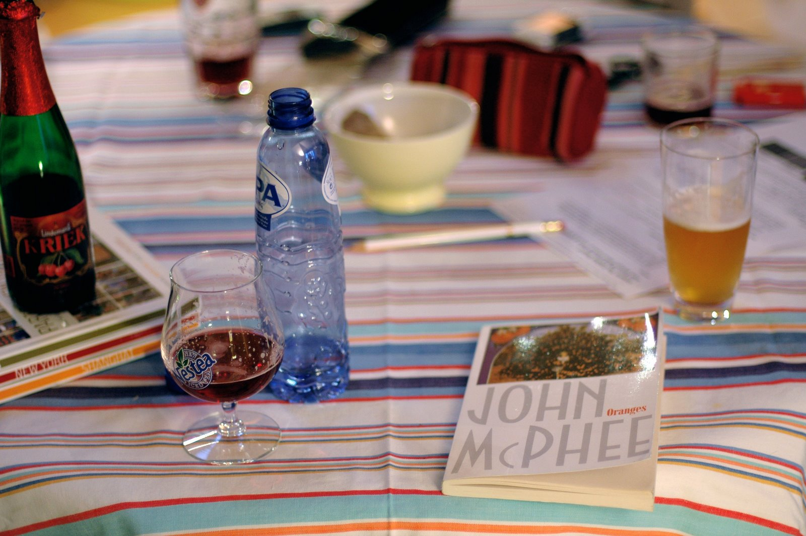
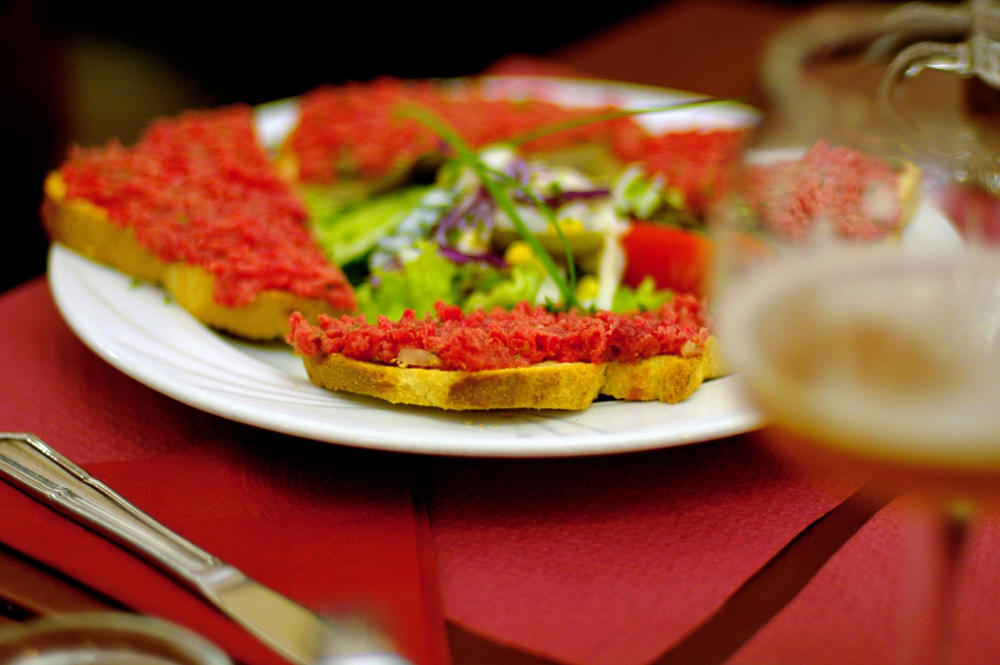
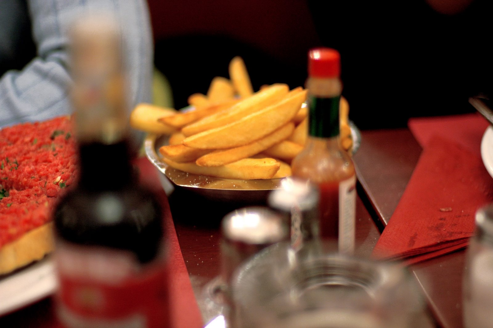

That’s all
We didn’t really plan to go to Brussels. We were just looking for a vacation, that’s all. Then one December night, over a couple of glasses of prosecco and a pizza, our friend Olaiya happened to tell me that she had just found cheap tickets to Brussels. I don’t make, nor do I intend to make, a habit of mixing alcohol and travel planning, but this I can now say from experience:
Prosecco + 2 Girlfriends + Talk of Cheap Tickets to Brussels =
2 Girlfriends + 1 Husband in Brussels, 2 ½ Months Later.
Not that I have any regrets, mind you. I’m just passing on information.
I had been to Brussels once before, when I was 18 years old, for approximately 36 hours. It was the summer after my high school graduation, and I went backpacking around Europe with my cousin Katie. We started out in London, took a couple of trains and a ferry to Bruges, and then, somewhere around day 8, arrived in Brussels. I remember next to nothing of our brief stay there, save for finding our hostel and showering for the first time in days, eating a mediocre waffle, and having a stranger come up close behind me on a street corner and say, breathing heavily into my ear, what I understood as, “Nice neck.” Of course, as it turns out, the words for “neck” and “ass” sound almost identical in French. But hey, you know, either way. By now, I was long overdue to a return visit.
{kind=link}
We met Olaiya a couple of years ago, shortly after she moved to Seattle from Brussels, where she had lived for four years. Olaiya is an effortless cook, the kind of person who seems to stir and whisk as easily as she walks and talks, and her kitchen is filled with remnants of Belgium: recipes for baked eggs and leek confit, old silver spoons and crackly bowls from the flea market at the Place du Jeu de Balle. She was always telling us about Brussels, her old haunts and friends and favorite beers, and sometimes, I knew, she missed it more than she wanted to. Last December, in need of a fix, she started combing the Internet for cheap fares. And then Brandon and I invited ourselves – prosecco, you are the BEST! – to come along.
And then, a few days before our departure date, we all, all three of us, came down with the flu. But we went anyway, and though the flight was miserable – and Brandon and I lost our luggage for a day, and the three of us landed in a graceless, coughing heap on the doorstep of Olaiya’s friend Laurence and completely demolished her supply of honey, lemons, and Nutella and then slept for the better part of 48 hours – in the end, I really, really liked Brussels.

Oddly enough, it reminded me a bit of Seattle. I’ve thought about it for a while, and a fair comparison might be this: that Brussels is to Paris, say, as Seattle is to San Francisco. Let me explain. Seattle and Brussels are both a little gritty around the edges. They’re gray; there’s a lot of construction; and the architecture is an endearingly odd mishmash of old and new. For large cities, they still feel a little quiet somehow, still sort of undiscovered. Both are composed of many small, discrete neighborhoods, but those neighborhoods are fairly spread out, so if you don’t know exactly where to go, you might not find a single thing. (Except Pike Place Market and the Grand Place.) In San Francisco or Paris, on the other hand, you’d be hard-pressed not to find something scenic, exciting, or at least pleasantly edible on most any street corner. (I exaggerate, but not by much.) What I mean by all this is that in Seattle and Brussels, you have to try a little harder. When you do, what you get is every bit as worthy; it just takes a little digging. Which, in its own way, makes it all the more charming.
{kind=link}
I don’t have a recipe for you today, but I hope you might not mind. Instead – and in case you find yourself in Brussels one day soon, or maybe just in need of a vacation at your desk – I want to tell you about a few things we found there, with all due credit, bien sûr, to Olaiya.
{kind=link}
I should begin by saying this: do not underestimate the combined power of fresh goat cheese, honey, and olives. (Or spicy olives, to be specific, coated in something akin to harissa.) It is the trifecta. It will slay you. Several months ago, Olaiya told us about these crêpes – or crêpe-like flatbreads; the sign called them m’semen – and explained that they could be found at a stand at the Marché du Midi on Sunday mornings. They make the best breakfast, she said, and I am happy to report that she did not lie. Warm, messy, and made on the spot, they spill over with soft, tangy cheese, sticky honey, and whole green olives coated in a fragrant, oily sauce that makes your lips burn and tingle. You’ll want to eat it on the spot, hunched over one of the wooden tables behind the stand, and be sure to order a glass of sweet mint tea to wash it all down. If it’s cold outside, and drizzly, the steam from the tea will send up a small mint-scented cloud that hovers over the table while you eat, and that, too, is very nice.
Of course, now that I’ve told you this, I wish I knew the name of the stand, but I’m afraid that I don’t. It also sells dried fruits and olives and marinated vegetables, if that helps, and of the stands selling those items – there are only a few of them – it is the largest. It’s located right near the overpass where the trains go by, next to the woman who sells fresh eggs and butter.

2. Belgians have an impressive way with raw beef. There is a powerful school of thought, I know, that holds that the only way to deal with raw beef is to cook it, but these people will not be daunted. Witness filet américain. Also known as steak tartare, it is a dish composed of minced or ground beef mixed with onions, capers, fresh herbs, and other seasonings, and occasionally an egg yolk. It is also delicious. I had not been terribly interested in eating raw beef before – although I do like a good carpaccio, and my mother loves to steal pinches of raw meatloaf from the mixing bowl – but now I want to eat it forever. Olaiya and Laurence took us to a tavern called Le Trappiste, a classic old place with red leather booths and wooden chairs and waiters with slicked hair and bow ties and vests, and there we chose from three different presentations of filet: the standard one, a mound in the center of the plate, served with toast; the sandwich one, in which the beef is piled onto a baguette; or my favorite, called toast cannibale.
{kind=link}
I have been wanting to tell you about this for two weeks now, in part because “cannibal toast” is the most fun thing to say in the whole, wide world. (Cannibal toast, cannibal toast, CANN-I-BAL TOAST!) Of course, now that I’ve gone and made a big deal about it, I should also tell you that in reality, it’s not nearly as exotic as it sounds. It’s actually kind of dainty. It’s filet on toast points, with a salad in the middle. But it’s outlandishly good – tender and sweet and pleasantly rich, spiked with crisp, briny capers – and with a splash of Worchestershire and a cornichon on the side, you will want to eat it every day. Or at least once a week.
P.S. The fries were also very good.

3. Do not be fooled by the impostor commonly known, in the United States, as the “Belgian waffle.” It is not only inferior, but it bears no resemblance, none whatsoever, to the loveliest of true Belgian waffles, the gaufre de Liège.
{kind=link}
In Belgium, there are two general types of waffle: the Brussels, and the Liège. The Brussels waffle is what most of us, in the US at least, would call a Belgian waffle. It is thick and evenly golden, with deep recesses for holding pools of butter or whipped cream or whatnot. Though delicious, is it rarely that remarkable. The Liège waffle, on the other hand, is what you see in the first photograph above, and it is nearly impossible to find outside of Belgium. It is sold on the street as a snack, and it, blessed be, is what people come back from Belgium swooning about. It is made from a rich, yeasted batter and cooked quickly in a heavy iron – often in an oven filled with gas flames – until it is tender and lightly caramelized, with a dense, stretchy crumb that looks a little like that of a particularly rich cinnamon roll. But what really makes it special is that it is sweetened with a particular type of sugar called pearl sugar. When the dough bakes, the little beads of sugar inside soften into sweet, melty pockets, and any beads facing the surface of the hot iron ooze like caramel.
All told, the whole thing is both deadly sweet and deadly, deadly delicious, and if you decide to share it with someone – like, maybe, your spouse – you had better be prepared to duke it out to the last crumb, and believe me, people, it will get dirty. Don’t say I didn’t warn you. Oh, and when you buy your waffle, be sure to choose a vendor with a gas oven, not an electric iron. And choose a vendor who is actively making his waffles, not just selling some that he baked, la di da, an hour before. (Belgaufra is a small chain that’s especially good; there are a couple of outposts on rue des Fripiers, not far from the Grand Place.) You want a fresh waffle, still warm from the oven, not a cold (or reheated) specimen. And then you might want another.
Addresses
Le Trappiste
Avenue de la Toison d’Or 3
Open daily
Belgaufra
Multiple locations